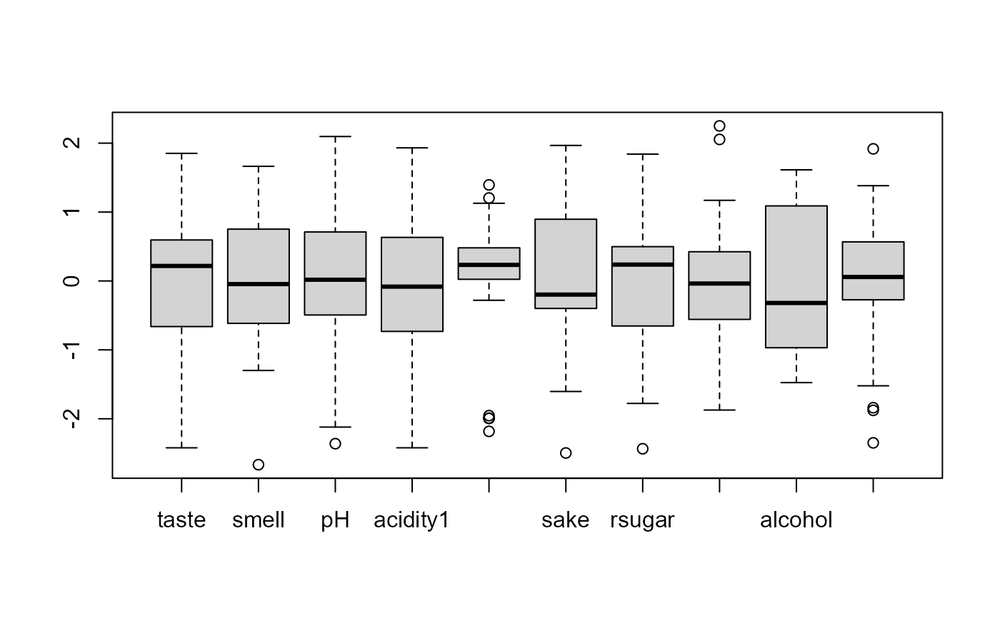
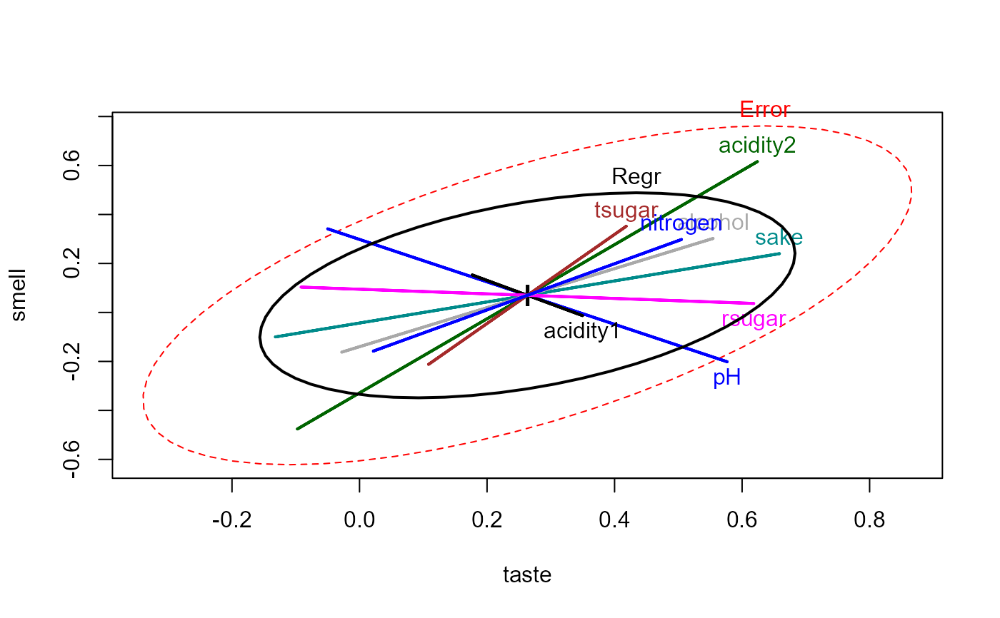

Sake.RdSiotani et al. (1985) describe a study of Japanese rice wine (sake)
used to investigate the relationship between two subjective ratings
(taste and smell) and a number of physical measurements
on 30 brands of sake.
These data provide one example of a case where a multivariate regression doesn't benefit from having multiple outcome measures, using the standard tests. Barrett (2003) uses this data to illustrate influence measures for multivariate regression models.
data(Sake)A data frame with 30 observations on the following 10 variables.
tastemean taste rating
smellmean smell rating
pHpH measurement
acidity1one measure of acidity
acidity2another measure of acidity
sakeSake-meter score
rsugardirect reducing sugar content
tsugartotal sugar content
alcoholalcohol content
nitrogenformol-nitrogen content
The taste and smell values are the mean ratings of 10 experts
on some unknown scale.
Siotani, M. Hayakawa, T. & Fujikoshi, Y. (1985). Modern Multivariate Statistical Analysis: A Graduate Course and Handbook. American Sciences Press, p. 217.
Barrett, B. E. (2003). Understanding Influence in Multivariate Regression. Communications in Statistics - Theory and Methods 32 (3), 667-680.
data(Sake)
# quick look at the data
boxplot(scale(Sake))

Sake.mod <- lm(cbind(taste,smell) ~ ., data=Sake)
library(car)
Anova(Sake.mod)
#>
#> Type II MANOVA Tests: Pillai test statistic
#> Df test stat approx F num Df den Df Pr(>F)
#> pH 1 0.276246 3.8169 2 20 0.03944 *
#> acidity1 1 0.030788 0.3177 2 20 0.73145
#> acidity2 1 0.183297 2.2444 2 20 0.13202
#> sake 1 0.141187 1.6440 2 20 0.21827
#> rsugar 1 0.178200 2.1684 2 20 0.14050
#> tsugar 1 0.054842 0.5802 2 20 0.56891
#> alcohol 1 0.075954 0.8220 2 20 0.45387
#> nitrogen 1 0.056486 0.5987 2 20 0.55909
#> ---
#> Signif. codes: 0 '***' 0.001 '**' 0.01 '*' 0.05 '.' 0.1 ' ' 1
predictors <- colnames(Sake)[-(1:2)]
# overall multivariate regression test
linearHypothesis(Sake.mod, predictors)
#>
#> Sum of squares and products for the hypothesis:
#> taste smell
#> taste 1.4171079 0.5786338
#> smell 0.5786338 1.4095094
#>
#> Sum of squares and products for error:
#> taste smell
#> taste 3.172559 2.248366
#> smell 2.248366 4.173491
#>
#> Multivariate Tests:
#> Df test stat approx F num Df den Df Pr(>F)
#> Pillai 8 0.6300580 1.207279 16 42 0.30236
#> Wilks 8 0.4642360 1.169193 16 40 0.33210
#> Hotelling-Lawley 8 0.9509599 1.129265 16 38 0.36489
#> Roy 8 0.6270207 1.645929 8 21 0.17134
heplot(Sake.mod, hypotheses=list("Regr" = predictors))
